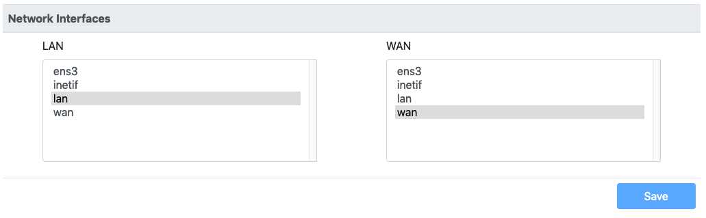
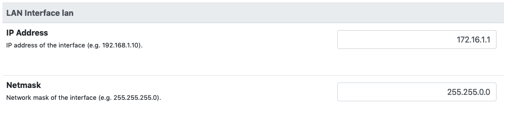

Getting Started
nEdge can be installed on Ubuntu 24 LTS using apt, it is thus necessary to configure the ntop repository by following the instructions at http://packages.ntop.org . After configuring the repository, nEdge can be installed with the below commands:
apt-get update
apt-get install nedge
Note
nEdge requires at least two wired network interfaces in order to run.
Warning
nEdge will change the system configuration of the device where it is installed. The original network configuration file is stored in /etc/netplan/*.yaml.old. The nEdge package will force the removal of the network manager as it conflicts with the nEdge operation.
First Start
Any change in the configuration operated from the GUI requires explicit confirmation before being applied. Some changes may require a device reboot.
After installing the package, nEdge will start automatically. The nEdge web GUI will be available on port 3000. For example, if the device has the IP address 192.168.1.10 the nEdge GUI will be available at the URL http://192.168.1.10:3000. Chrome, Firefox and Safari are the web browser officially supported.

nEdge Login screen
The credentials for accessing the GUI the first time are user admin and password admin.
After logging in into the GUI for the first time, visit the System Interface and access the System Setup. The first thing to look at is the Operating Mode. The following operating modes are available:

nEdge operating mode selection
Bridge Mode: provides minimal configuration and easy integration with existing network
Router Mode: provides advanced routing with multiple gateways
After choosing the operating mode, it’s necessary to define which network interfaces available in the system will be used as WAN or LAN interfaces. In case of router mode, multiple WAN interfaces can be selected from the multiple choice list.

Network interfaces roles selection
NOTE: the interfaces list available into nEdge is based on the network interfaces available in the system at the time of the first startup. After removing or adding a new network interface to the system, a factory reset is required in order to make it available into the nEdge GUI.
Based on the chosen setup, the Network Configuration will provide interfaces configuration. For bridge mode, only LAN configuration is necessary. In router mode, both LAN and WANs configurations are necessary. LAN and WAN network addresses should not collide.

LAN network configuration
It is important to remember the configured LAN address, as it will be necessary to access the nEdge GUI after the reboot. In case of bridge mode where the LAN is set in DHCP client mode, it’s necessary to view the DHCP server log or other tools in order to figure out, after the reboot, the IP address assigned to the LAN.
After setting up the basic configuration, clicking the Apply button on the top of the page to write the system configuration to disk and reboot the device. After the reboot, the nEdge device will be available at the configured LAN address, port 3000.
In case of troubles reaching the device, the nEdge device should still be reachable via its recovery address as discussed in the device recovery section.
Running into a VM
In order to run nEdge into a Virtual Machine, a feature called PCI Passthrough must be enabled on the VM hypervisor. The PCI Passthrough will give the VM guest full control on the physical network interface.
Here is a guide to enable it on some virtualization platforms: https://www.ntop.org/guides/pf_ring/vm/virsh_hostdev.html .
Note
The link above is just a reference to setup the Passthrough. PF_RING ZC will be useless with nEdge.